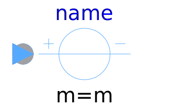
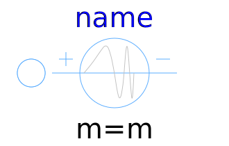
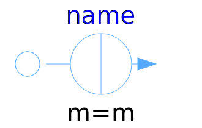
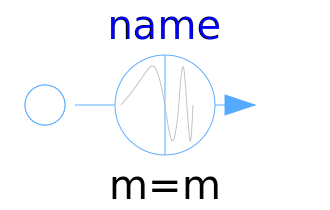

This package hosts sources for quasi stationary multiphase circuits. Quasi stationary theory can be found in the references.
| Name | Description |
|---|---|
|
|
Constant multiphase AC voltage |
|
|
Variable multiphase AC voltage |
|  ReferenceVoltageSource | Variable multiphase AC voltage with reference angle input |
|  FrequencySweepVoltageSource | Voltage source with integrated frequency sweep |
|  CurrentSource | Constant multiphase AC current |
|
|
Variable multiphase AC current |
|
|
Variable multiphase AC current with reference angle input |
|  FrequencySweepCurrentSource | Current source with integrated frequency sweep |